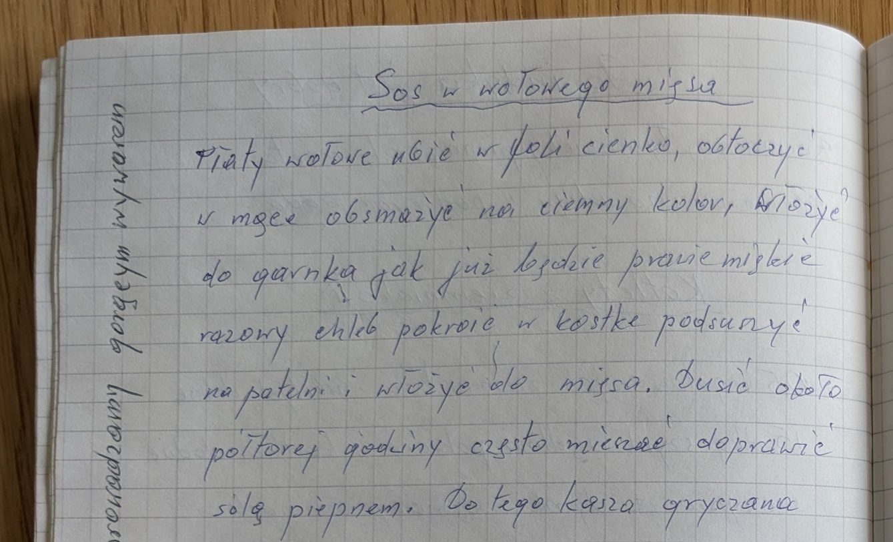

Sos z wołowego mięsa


Składniki
- płaty wołowe
- mąka
- chleb razowy
- sól, pieprz
- kasza gryczana
Przygotowanie
- Płaty wołowe cienko ubić w folii, obtoczyć w mące.
- Obsmażyć na ciemny kolor i włożyć do garnka.
- Gdy mięso będzie prawie miękkie, dodać chleb razowy pokrojony w kostkę i podsuszony na patelni.
- Dusić około półtorej godziny, często mieszać.
- Doprawić solą i pieprzem, podawać z kaszą gryczaną.
Oryginalny zapis
Sos z wołowego mięsa Płaty wołowe ubić w folii cienko, obtoczyć w mące obsmażyć na ciemny kolor, włożyć do garnka jak już będzie prawie miękkie razowy chleb pokroić w kostkę podsuszyć na patelni i włożyć do mięsa. Dusić około półtorej godziny często mieszać doprawić solą pieprzem. Do tego kasza gryczana